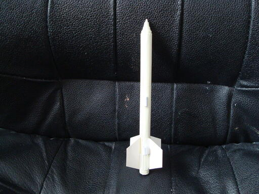

О модели "Чарли"
Это будет ностальгически-сентементальная история. Давным давно, в 1977 году,
когда мне было 14 лет, мне в руки попал один из номеров журнала "Юный
Техник" за 1964-й год. Это было в доме моей прабабушки. Журнал валялся в
куче давно забытых газетно-журнальных изданий. Одна короткая статья
буквально снесла мне крышу. Назвалась она "На старте ракета - малютка".
Спустя почти 40 лет я нашел её в интернете:
Страница 56
Страница 57
В ней рассказывалось о том, как сделать настоящую летающую ракету. Так
просто! Я был потрясен. Я немедленно потребовал выдать мне карандаш, клей ПВА,
плотную бумагу, еще какую-то мелочь. Уже спустя два часа держал в руках ракету.
На фотке ниже такая-же ракета, сделанная в 2011 году:

Однако, ракета не полетит, если нет топлива. Калиевая селитра в магазинах
не продавалась. Была натриевая, но она (судя по статье) не годилась. Надо
сказать, что много лет спустя я понял, что натриевая тоже подошла бы, хотя,
возможно в других пропорциях. Но я тогда воспользовался традиционным детским
пиротехническим составом - спичечные головки. Спустя несколько дней моя
первая ракета была запущена с балкона в сторону 12-этажного дома напротив.
Полет получился неудачным. Конструкция взлетела метров на 10, а потом ей
вышибло деревянное сопло.
После этого началась многолетняя история моих ракетных приключений.
Конструкций было много, хотя полетели совсем немногие. При этом я регулярно
возвращался к своей самой первой. В сущности, я до сих пор влюблен в нее.
Попав в США я обнаружил ракетные движки в обычных промтоварных магазинах.
Это было в начале 2000-х. Сейчас они оттуда пропали. Попробовал, летают
нормально.
В 2011 году, наконец у меня начали успешно летать ракеты на самодельном
топливе. Впрочем уголь был заменен сахаром. Так просто меньше грязи. Уголь
имеет свойство сильно пачкать в доме.
Ракета системы "Чарли", созданная в точности как в детстве, в последний
раз летала в 2011 году. Потом я от нее все-таки отказался. Компьютерные
технологии позволяют найти оптимальные размеры. Откуда такое название? Не скажу,
но так вышло. К тому же раньше названия вообще не было. Было просто
"ракета". Путем проб и расчетов она постепенно трансформировалась в
конструкцию "Комарилла". См. на предыдущей странице. После этого улучшить
эту систему уже некуда.
Меня всегда влекла миниатюрность. Да, я пытался делать что-то побольше,
но такие конструкции меня совсем не привлекали и были даже неприятны.
Традиционная красно-бело-черная раскраска всегда использовалась для того,
чтобы ракету можно было бы легко найти после приземления. Хотя теперь
это потеряло смысл. Ракеты улетают так высоко, что обратно уже не
возвращаются. В сущности из за скорости они исчезают, не успев сойти со
стартового прутка. Стремление к совершенству обесценило результат. Он стал
невидимым.
Сейчас, когда я пишу эти строки, 2022 год, и мне 59. Последняя
"Комарилла" улетела 2 для назад.
(C) *** JES 2022 *** Юрий Шимановский
http://shymanovsky.mooo.com
Назад|На главную